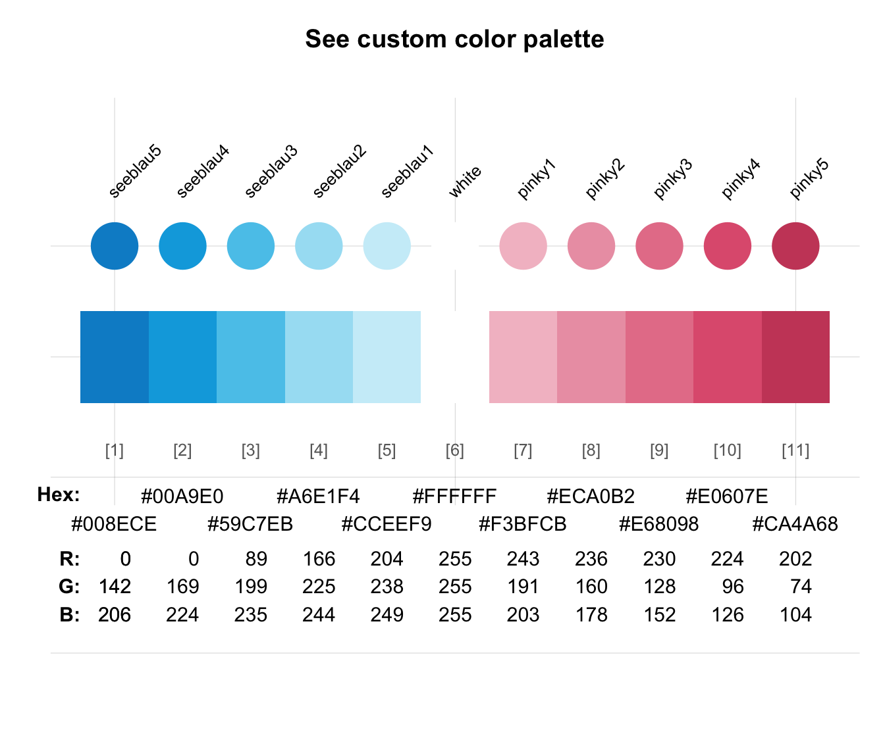
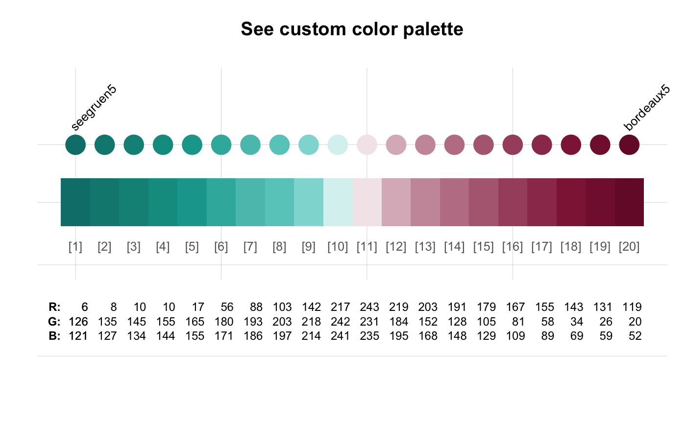
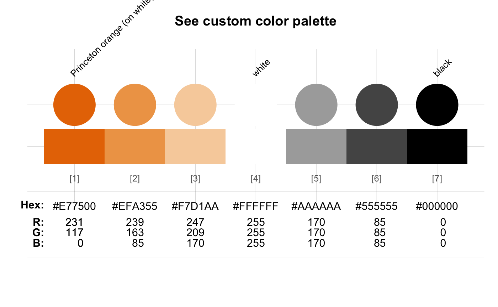

usecol allows using a color or color palette pal (e.g., for plotting).
usecol( pal = pal_unikn, n = "all", alpha = NA, use_names = FALSE, use_col_ramp = FALSE )
| pal | A color palette (as a vector of colors or color palettes).
Default: |
|---|---|
| n | An integer value specifying the desired number of colors from the palette.
Default: |
| alpha | A factor modifying the opacity alpha (as in |
| use_names | A logical value indicating whether colors should be returned as a named vector.
Default: |
| use_col_ramp | A logical value specifying whether the default of using pre-selected colors
should be overridden and |
A vector of colors (in character format).
usecol also allows modifying and combining color palettes in various ways.
usecol(pal = pal_unikn, n = "all") # default color palette#> [1] "#008ECE" "#00A9E0" "#59C7EB" "#A6E1F4" "#CCEEF9" "#FFFFFF" "#E5E5E5" #> [8] "#CCCCCC" "#999999" "#666666" "#000000"usecol(pal = pal_unikn, n = 4) # selecting n dedicated colors#> [1] "#00A9E0" "#A6E1F4" "#FFFFFF" "#000000"usecol(pal = pal_unikn, n = 20) # extending color palette#> [1] "#008ECE" "#009CD7" "#04AAE0" "#33BAE6" "#61C9EB" "#89D7F0" "#ABE3F4" #> [8] "#C0E9F7" "#D6F1FA" "#F1FAFD" "#F8F8F8" "#EAEAEA" "#DDDDDD" "#CFCFCF" #> [15] "#B9B9B9" "#9E9E9E" "#838383" "#686868" "#353535" "#000000"# Mixing a new color palette: pal_1 <- usecol(pal = c(rev(pal_seeblau), "white", pal_pinky)) seecol(pal_1)# Mixing and extending a color palette: pal_2 <- usecol(pal = c(rev(pal_seegruen), "white", pal_bordeaux), n = 20) seecol(pal_2)# Defining and using a custom color palette: pal_princeton_1 <- c("#E77500", "white", "black") names(pal_princeton_1) <- c("orange_w", "white", "black") pal_3 <- usecol(pal_princeton_1, n = 7) seecol(pal_3)